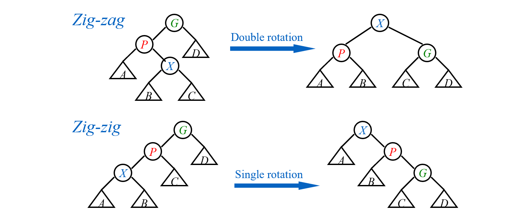

Preparation Before Class
-
教材
数据结构教材
introduction to algorithms
algorithm design
数据结构学习与实验指导
-
评分
作业：10%
Discussion：10%
Research Topic：10%
期中：10%（可被期末覆盖）
期末：40%
AVL Trees
-
目标：加速查找
-
方法：查找树
-
O(height)
-
递增/递减序列退化成链
-
最好情况（树最矮）：所有子树高度相等——太苛刻
-
AVL树定义
-
空树平衡
-
非空树平衡当且仅当
-
左子树与右子树都平衡
-
左右子树高度差小于等于1
-
-
平衡因子BF（node）=左子树高度-右子树高度
- AVL只能取-1，0，1
本课中定义空树高度为-1
几个例子：

这样就得到了性质较好的树
如何得到AVL树
- 树的旋转
 B高度增加1，A高度减少1。复杂度为\(O(1)\)，代码如下
B高度增加1，A高度减少1。复杂度为\(O(1)\)，代码如下
typedef struct Node *Tree;
struct Node
{
ElementType Element;
Tree Left;
Tree Right;
}
A->Left=B->Right;
B->Right=A;
return B;//新根
AVL树的插入：
每插入一个新结点，记录（以其为根节点的）高度，从下到上更新父节点高度，计算平衡因子，一但不符合条件
-
因子在同一个方向变化
-2：左旋（RR Rotation——指从失衡节点开始向右插两次的情况）
2： 右旋（LL Rotation，与RR对称）

-
不同方向：把树高高方向的孙子转上来，转两次（两种对称情况，LR和RL）

实际上，根据AVL树的良好定义，在每次插入后只需要一次操作（RR/LR...）就能使其再次平衡。
AVL树的删除：
用删除节点左子树的最大节点/右子树的最小节点替换他（与BST相同），再删除。
从删除节点的父节点开始（替换后），记录（以其为根节点的）高度，从下到上更新父节点高度，计算平衡因子，一但不符合条件，就用insert中的方法调整。在删除操作中，可能会需要多次调整。
复杂度分析
树高的渐进上界
\(n_h\)——h高度的树需要的最小结点数
高度为h的树（所需节点最少）如下

与斐波那契数列类似：
\(F_0=0,F_1=1,F_n=F_{n-1}+F_{n-2}\)
而\(F_n\approx\frac{1}{\sqrt{5}}(\frac{1+\sqrt{5}}{2})^i\)
所以 \(n_h =F_{n+3}-1\)
- \(h=O(lnn)\)
Splay Trees
-
目标：M次操作，总的时间复杂度\(O(MlogN)\)，即每个操作平均复杂度为\(O(logN)\)
-
基本思想：每次查询/插入，将该元素提到根节点
构造过程
-
如果查询节点的父亲是根——旋转查询节点
-
如果不是，则有父亲节点（P）和祖父节点（G）
- zig-zag（z字形）：转两次当前节点
- zig-zig（一个方向）：先转父节点，再转当前节点 
删除操作
-
找到要删除的元素X（这样让其在根节点）
-
删掉X，得到左子树和右子树
-
找到左子树最大的节点，将其推到根节点
-
这样就能直接将右子树接到左子树的右边
Amortized Analysis(Three normal methods)
An amortized analysis guarantees the average performance of each operation in the worst case.
-
Splay树的目标：M次操作，总的时间复杂度\(O(MlogN)\)——均摊时间上界(Amortized time bound)
-
worst-case bound >= amortized time bound >= average-case bound
-
前两种与数据分布无关
聚合分析
对于所有 n，n 个运算序列总共需要最坏情况时间（determine an upper bound） T（n）。因此，在最坏的情况下，每次操作的平均成本或摊销成本为 T（n）/n。
以栈为例：
-
push：\(O(1)\)， pop：\(O(1)\)，
-
multipop（一次pop出n个）：\(min\{k，n\}=O(n)\)，其中k是当前栈中元素数
-
所以n次操作上界：\(O(n^2)\)
-
更精确：栈中元素数肯定小于n，push进的元素只能pop一次，所以总的时间复杂度\(O(n)\) $$T_{amortized}= O( n )/n = O(1) $$
核算法
以卖汽水为例：
-
a卖一瓶汽水3元
-
b用5元买汽水，存两元（credits）到a那，下次买汽水可以用。此时actual cost：3元
-
\(amortized\ cost = actual\ cost + credits\)
-
买n瓶汽水，bound： $$ amortized\ cost \geq actual\ cost(即3n元，因为不赊账) $$
注意保证最终信用不小于0
回到栈操作：
-
实际代价：push=1, pop=1, multipop=min(sizeof(s),k)
-
均摊代价：push = 2(提前把pop的代价付掉，即使不pop该元素), pop = multipop = 0，这样所有代价都是常数
-
Credits：push = +1, pop = -1, multipop = -min(sizeof(s),k)
-
multipop时的信用为sizeof(s)，因此不会出现信用为负的情况
-
n次操作最大的amortized cost为2n，\(T_{amortized}= O( n )/n = O(1)\)
势能法
-
\(\Phi(D_i)\)：势能函数，表示\(D_i\)状态的势能
-
\(Credits =\Phi(D_i)-\Phi(D_{i-1})\);
-
合法的势能函数：保证\(\Phi(D_{0})\)是最小的，这样总的Credits\(=\Phi(D_n)-\Phi(D_{0})\)>0，均摊代价是实际代价的上界。下面公式中 \(\hat{c_i}\) 是均摊代价， \(c_i\) 是实际代价 $$ \sum_{i=1}^n\hat{c_i}=\sum_{i=1}^n(c_i+\Phi(D_i)-\Phi(D_{i-1}))=\sum_{i=1}^nc_i+\Phi(D_n)-\Phi(D_{0}) $$
再次回到栈
-
势能函数\(\Phi(D_i)=D_i\)时刻栈中的元素数
-
计算均摊代价：
-
push：\(\hat{c_i}=c_i+\Phi(D_i)-\Phi(D_{i-1})=1+1=2\)
-
multipop：\(\hat{c_i}=c_i+\Phi(D_i)-\Phi(D_{i-1})=k'-k'=0\)
-
每个操作的代价都是O(1)——均摊代价是O(1)
应用：分析splay tree的均摊代价——Amortized Analysis Using Potential Methods:
树的常见势能函数：节点个数、树高···
(因为报告用英文写的所以下面是英文)
In tree's amortized analysis, we often use the height of tree or the amount of nodes as the potential function, which satisfy \(\Phi(0)\) is the minimum. To make the potential function increasing slowly, we choose \(\Phi(T)=\sum_{i\in T}S(i)\), where S(i) is the number of descendants of i (i included). \(\Phi(T)\) is also called rank of T, notion \(R(T)\)
Lemma: If \(a+b\leq c\)
then \(loga+logb\leq 2logc-2\)
Same as the part of algorithm analysis, there are three situations to discuss according to the picture.
-
If the "X" to be pushed is one of the childs of root, we only need one rotation. Except X and P, the "S(i)" didn't change, and the rotation cost \(c_i\) is 1. So the amortized cost $$ \hat{c_i}=1+R_2(X)-R_1(X)+R_2(P)-R_1(P) $$ $$ \leq 1+R_2(X)-R_1(X) $$ (shown below that \(R_2(P)<R_1(P)\))
-
In the zig-zag case, we need two rotation, costing 2. We note that \(R_2(X) = R_1(G) = log(the\ number\ of\ nodes\ in\ T)\). So the amortized cost $$ \hat{c_i}=2+R_2(X)-R_1(X)+R_2(P)-R_1(P)+R_2(G)-R_1(G) $$
$$ =2-R_1(X)+R_2(P)-R_1(P)+R_2(G) $$
$$
\leq 2(R_2(X)-R_1(X))
$$
(shown below that nodes: \(P_2+G_2<X_2,\ so\ according\ to\ lemma,\ R_2(P)+R_2(G)\leq 2R_2(X)+2\))
 * In the zig-zig case, we need two rotation, too, costing 2. We also note that \(R_2(X) = R_1(G)\). So the amortized cost
$$
\hat{c_i}=2+R_2(X)-R_1(X)+R_2(P)-R_1(P)+R_2(G)-R_1(G)
$$
* In the zig-zig case, we need two rotation, too, costing 2. We also note that \(R_2(X) = R_1(G)\). So the amortized cost
$$
\hat{c_i}=2+R_2(X)-R_1(X)+R_2(P)-R_1(P)+R_2(G)-R_1(G)
$$
$$
=2-R_1(X)+R_2(P)-R_1(P)+R_2(G)
$$
$$
=2-2R_1(X)+R_2(P)-R_1(P)+R_2(G)+R_1(X)
$$
$$
\leq 3(R_2(X)-R_1(X))
$$
(shown below that nodes: \(X_1+G_2<X_2,\ so\ according\ to\ lemma,\ R_1(X)+R_2(G)\leq 2R_2(X)+2\))

When splay, the former \(3R_2(X)\) could be eliminated by the latter item's \(-3R_1(X)\). After sum of all the items, we get: $$ \hat{c_i} \leq 1+3(R_2(X)-R_1(X))=O(logN) $$
算法导论的摊还分析例子
Incrementing a binary counter(k bit in total)
-
每次从低位往高位翻转bit，遇到1继续翻转，遇到0翻转完后停下来
-
worst case: 每次最多转k个bits——011...1=>100...0
聚合分析：
-
A[0]每次都改变
-
A[1]每两次改变一次
-
假设计数n次，则A[0]改变\(n\)次，A[1]改变\(\lfloor\frac{n}{2}\rfloor\)次...A[i]改变\(\lfloor\frac{n}{2^i}\rfloor\)次
-
因此总共的操作（翻转bit）的次数为
因此总的时间复杂度上界为O(n)，均摊时间复杂度为O(n)/n=O(1).
核算法：
-
实际代价：1变为0 = 1, 0变为1 = 1
-
均摊代价：0变为1 = 2(提前把1变为0的代价付掉), 1变为0 = 0
-
从0开始计数，肯定先将0变为1才能变回去，因此不会出现信用为负的情况
-
我们知道每次最多只有一个0变成1
-
因此均摊代价为O(1)
势能法：
- 选取势能函数：当前1的数目，记为\(b_i\)
Red-black Tree
tips: 访问空指针会 Sigementation fault，，可以指向一个虚拟节点（哨兵）
- 目标：每次搜索都\((logn)\)
1. 红黑树定义
-
红黑树的每个节点要么是红色的，要么是黑色的
-
根节点是黑色的
-
每个叶子都是哨兵（NIL），哨兵是黑色的
-
如果节点是红色的，那么他的孩子都是黑色的
-
每个节点到（能到达的）所有叶子的简单路径，经过的黑色节点数相同
- black height: 不算自己、不算哨兵，经过的黑色节点数
引理：
证明：
2. 红黑树构造
构造想法：插入新节点且染成红色——保持性质5，通过迭代变换保持其他性质
Insert(不满足性质有三种情况)：
-
case 1：红叔叔（所以爷爷肯定黑色）——将爸爸和叔叔染黑，爷爷染红

-
case 2：近叔叔黑——旋转到case3
-
case 3：远叔叔黑——父亲染黑，旋转爷爷

这样保持了每次只有一条规则被破坏
- 复杂度：最坏情况——一直case 1 $$ T = O(h) = O(logn) $$
Delete
-
被删节点是leaf node: 父亲指向NIL
-
只有一个儿子：用儿子替代他
-
有两个儿子：用左子树最大的/右子树最小的替代他。
此时
B+ Tree
1. 定义
A B+ tree of order M:
-
根节点要么没有孩子，要么有\([2,M]\)个孩子
-
除根之外的非叶子节点，有\([\lceil M/2\rceil,M]\)个孩子
2. 插入过程
-
插入=>若超限=>分裂
-
保证有序/找到位置：遍历（O(n)）
-
如果推到前面——可能O(n)，因此实际操作不这么做
Btree Insert(ElementType X,Btree T)
{
Seach from root to leaf
}
choose M: best 3 or 4
B+树的好处：相近的元素离得近，磁盘友好
3. 删除过程
Inverted File Index
应用：信息检索，搜索引擎
Solution 2: 矩阵存储
磁带假设：词和词没有顺序
Solution 3: Inverted File Index（参考图论，将矩阵用邻接表表示）
| Doc | Text |
|---|---|
| 1 | Gold silver truck |
优化
- 对term进行处理
- 只留下词根
-
停用词（stop words）过滤：the、a、what...——成本大，收获低
-
获得term后
- 哈希
-
搜索树
-
内存优化
- 内存不够时，把写好的词典放入disk
- 释放内存，创建一个新的词典
-
归并排序
-
disk不够时
- Solution 1：将磁盘按字母序放在不同电脑里
- Solution 2：Document-Partitioned index
-
Dynamic indexing
- 物理删除代价昂贵——做新旧标记
- Main list和new list
评估
precision&recall